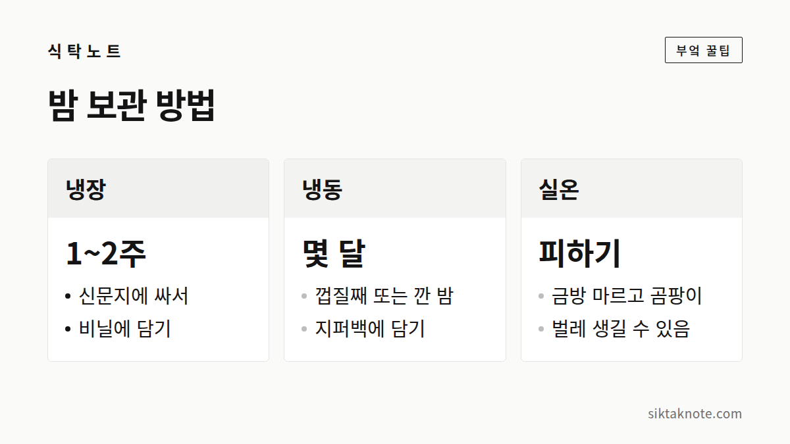

생밤 보관법 — 냉장·냉동 보관과 벌레 먹은 밤 고르는 법

3줄 요약
- 생밤은 사 온 날 상한 밤을 골라내고, 신문지에 싸서 비닐에 담아 냉장해요.
- 오래 두려면 껍질째 또는 깐 밤을 냉동해요. 깐 밤은 변색되니 바로 얼려요.
- 곰팡이가 폈거나 구멍이 뚫려 있거나 속이 검고 쓴맛이 나면 먹지 마세요.

생밤은 가을 한철에만 만날 수 있는 식재료예요. 겉은 단단해 보여도 시간이 지나면 마르거나 곰팡이가 피기 쉬워서, 사 온 날 손질해서 두는 게 좋아요.
사 오면 먼저 골라내요
- 껍질에 구멍이 뚫려 있거나 가루가 묻은 밤은 골라내요. 벌레가 먹었을 수 있거든요.
- 눌러 봐서 물렁하거나 속이 빈 느낌이 나는 밤도 골라내요.
- 큰 그릇에 물을 받아 밤을 담갔을 때 떠오르는 밤은 속이 말랐거나 벌레 먹었을 수 있다고 알려져 있어요. 다만 이것만으로 단정하지는 마세요.
사 올 때 고르는 요령도 있어요. 껍질에 윤기가 돌고 들어 봤을 때 크기에 비해 묵직한 밤이 좋다고들 해요. 속이 마른 밤은 가볍게 느껴지거든요.
밤 속에서 자란 벌레가 껍질에 동그란 구멍을 뚫고 나오기도 한다고 알려져 있어요. 그러니 구멍 난 밤은 벌레가 이미 나간 흔적일 수 있고, 아직 구멍이 없는 밤 속에 벌레가 들어 있을 수도 있어요. 물에 담가 골랐다면 건져서 겉의 물기를 완전히 말린 뒤에 보관하세요. 젖은 채 넣어 두면 곰팡이가 펴요.

며칠~2주 안에 먹을 거라면 냉장
- 껍질째 신문지나 키친타월로 감싸요.
- 비닐봉지에 담되, 입구는 살짝 열어 두세요.
- 냉장고 채소칸에 두고 1~2주 안에 드세요.
너무 오래 두면 냉장고에서도 말라서 딱딱해지고 단맛이 줄어요.

마르지도 눅눅하지도 않게
밤은 수분이 많은 견과예요. 마르면 딱딱해지고 단맛이 줄지만, 수분이 너무 남으면 곰팡이가 펴요. 신문지로 싸고 비닐에는 숨구멍을 내 두는 건, 마르지도 눅눅하지도 않게 맞추려는 거예요. 입구를 열어 두기 번거롭다면 비닐봉지에 구멍을 몇 개 뚫어 두는 것도 방법이에요. 신문지가 눅눅해졌다면 새것으로 갈아 주고, 봉지 안에 물방울이 맺혔다면 한 번 열어 닦아 주세요.
오래 두려면 냉동
- 껍질째 얼릴 때는 깨끗이 닦아 지퍼백에 담아 얼려요.
- 깐 밤은 시간이 지나면 변색되니, 껍질을 벗기자마자 바로 지퍼백에 담아 냉동하세요.
- 삶은 밤은 식힌 뒤 반으로 갈라 냉동해 두면, 간식으로 꺼내 먹기 좋아요.
쓸 때는 냉동 상태 그대로 삶거나 쪄 먹으면 돼요. 해동하면 물러질 수 있으니 바로 조리하세요.
껍질째 얼릴 밤은 물기를 완전히 말린 뒤에 넣어요. 한 번에 먹을 만큼씩 나눠 담고 날짜를 적어 두면 편해요. 삶거나 구운 밤은 수분이 많아 상하기 쉬우니, 실온에 오래 두지 말고 식으면 바로 냉장하거나 냉동하세요.
구워 먹을 땐 칼집부터
껍질째 굽거나 전자레인지에 돌릴 때는 껍질에 칼집을 내 주세요. 속에서 생긴 수증기가 빠져나가지 못하면 밤이 터질 수 있고, 뜨거운 조각이 튀면 다칠 수 있어요.
실온에 두면 금방 탈이 나요
실온에 두면 속이 마르고 곰팡이가 피거나 벌레가 생기기 쉬워요. 가을이라도 실내가 따뜻하면 금방 상하니, 실온 보관은 피하는 게 좋아요.
이런 밤은 먹지 않아요
곰팡이가 폈거나 속이 검고 쓴맛이 나는 밤은 먹지 마세요. 껍질에 작은 구멍이 뚫려 있고 안에 벌레나 가루가 있다면 그 밤은 버리세요. 한 알을 골라내도 다른 밤에 벌레가 있을 수 있으니, 같이 보관하던 밤을 한 번 더 살펴보세요.
이 글은 시장이나 마트에서 파는 생밤 기준이에요. 산에서 주운 밤도 같은 원칙을 쓰되, 상태를 더 꼼꼼히 살펴보세요.
자주 묻는 질문
밤을 물에 담가 두고 보관해도 되나요?
물에 담가 두는 보관법은 밤을 가공하는 곳에서 쓰는 방법으로 알려져 있어요. 물을 자주 갈아 주지 않으면 상할 수 있으니, 집에서는 권하지 않아요.
벌레 먹은 부분만 도려내고 먹어도 되나요?
안쪽까지 벌레 흔적이 번져 있거나 곰팡이가 생기기 쉬워서, 벌레 먹은 밤은 버리는 게 안전해요.
깐 밤은 냉장해도 되나요?
깐 밤은 금방 변색되고 마르기 쉬워서 오래 두기 어려워요. 바로 먹을 게 아니라면 껍질을 벗기자마자 냉동하고, 냉장했다면 되도록 빨리 쓰세요.
냉동한 밤은 얼마나 두고 먹을 수 있나요?
냉동하면 오래 둘 수 있지만 영원히 가는 건 아니에요. 날짜를 적어 두고 먼저 얼린 것부터 쓰세요.
가을에만 만나는 밤, 끝까지 맛있게 드세요.